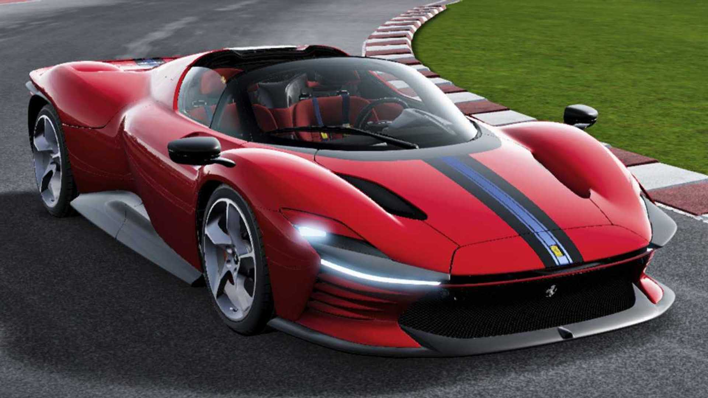

Маши́на (лат. machina «устройство, конструкция» ← др.-греч. μηχανή «приспособление, способ») — техническое устройство, выполняющее механические движения (см. уточнение ниже) для преобразования энергии, материалов и информации[1]. Понятие «автомобиль[2]» включает в себя легковой, грузовой автомобиль и автобус. Несмотря на ряд принципиальных конструктивных различий, между ними имеется много общего: двигатель внутреннего сгорания, несущая система с подвеской и шинами, органы управления, тормозная система. На автомобильных заводах конечным продуктом производства могут быть как автомобили в сборе, так и отдельные их составные части (двигатели, задние мосты, топливная аппаратура и т. п.), включающие в себя большое число деталей, узлов, механизмов и систем. Деталь — это неразделимый элемент, выполненный из целой заготовки (куска материала). Деталями являются, например, болты, шестерни, валы и т. д. Детали, с которых начинается сборка узлов, механизмов или агрегатов, называются базовыми (например, блок цилиндров)[3]. В более расширенном современном определении, появившемся с развитием электроники, машиной является технический объект, состоящий из взаимосвязанных функциональных частей (деталей, узлов, устройств, механизмов и др.), использующий энергию для выполнения возложенных на него функций[4]. В этом понимании машина может и не содержать механически движущихся частей. Примером таких устройств служат электронно-вычислительная машина (компьютер), электрический трансформатор[1], ускоритель заряженных частиц.
